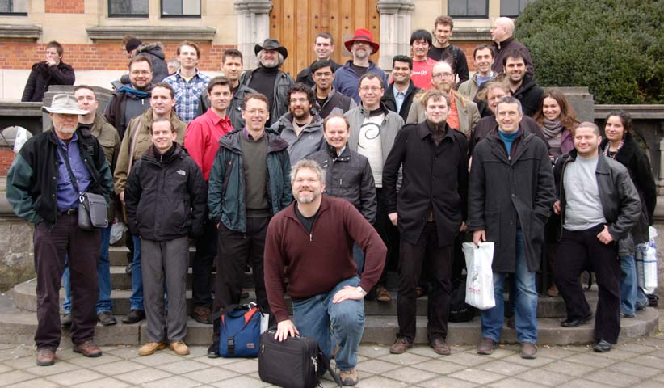

This january I attended the FOSDEM in Brussels for the first time. Before I only visited those expensive enterprise conferences like JAOO, JAX and the like. It really was a great experience. A free conference (in terms of registrations fees) about free and open source software. I hope I can attend it next year again.
I stayed at the Java Dev-Room for most of the time. The speakers there were not the best presenters (cause they are real geeks) but still they gave me inspiration and I could widen my horizon by learning new stuff from them.
One nice thing was that some companies (Oracle, tarent, ...) were sponsoring a dinner. The conversations with the participating Java folks were very nice. We talked a little about everything concerning IT stuff. From different hardware architectures to design patterns and political stuff.
One neat tool I have to look into is SystemTap. It enables one to do sophisticated application diagnosis on a Linux OS. For example trace down a Java method call through the JVM down to the native system call. Pretty detailed and interesting tool if one is faced with very tricky performance or functional problems.
Date published: 2011-02-09
Date modified: 2011-02-09
Keywords: Conference, FOSDEM, Java, SystemTap